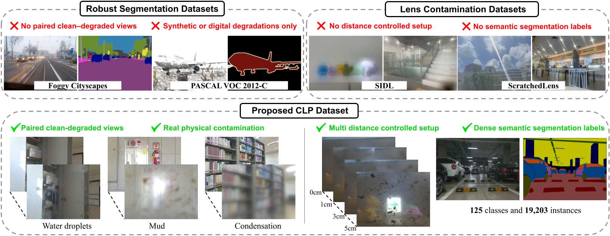
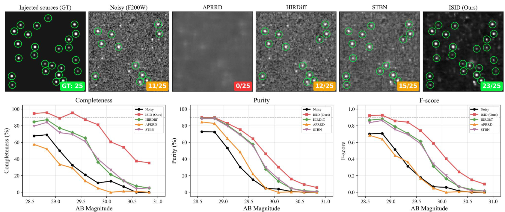
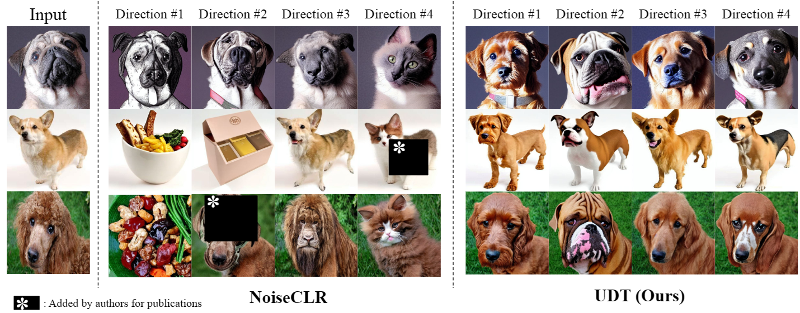
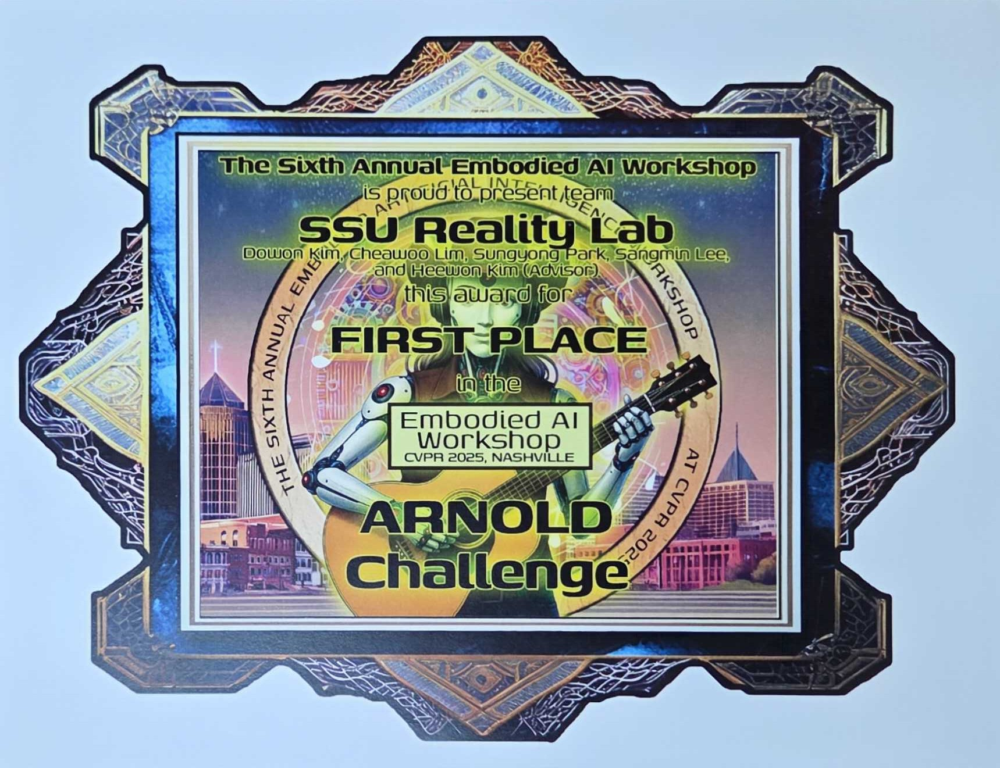

Sungyong Park
Ph.D. Student in Digital Media (Artificial Intelligence) at Soongsil University
Department of Digital Media, Soongsil UniversitySeoul, Republic of Korea
ejqdl at soongsil dot ac dot kr / ejqdl010 at gmail dot com
Ph.D. Student in Digital Media (Artificial Intelligence) at Soongsil University
Department of Digital Media, Soongsil Universityejqdl at soongsil dot ac dot kr / ejqdl010 at gmail dot com
I am a Ph.D. student at the Reality Lab in the Department of Digital Media at Soongsil University, advised by Prof. Heewon Kim.
My research focuses on computer vision and embodied AI, especially robust visual perception under real-world degradations and generalizable robot manipulation. I am interested in building AI systems that can perceive reliably in imperfect sensing conditions and act effectively in continuous, language-conditioned environments.
My research centers on robust perception and embodied intelligence for real-world AI systems. Key areas of interest include:

Sungyong Park*, Sooyoung Choi*, Hyunseo Koh, Youngjae Choi, and Heewon Kim, IEEE/CVF Computer Vision and Pattern Recognition Conference (CVPR), 2026
PDF Website@inproceedings{park2026clp,
title={CLP: A Real-World Dataset of Contaminated Lens Protectors for Robust Semantic Segmentation},
author={Park, Sungyong and Choi, Sooyoung and Koh, Hyunseo and Choi, Youngjae and Kim, Heewon},
booktitle={Proceedings of the IEEE/CVF Conference on Computer Vision and Pattern Recognition},
year={2026}
}
Sungyong Park, Ji Hoon Kim, and Heewon Kim, NTIRE Workshop at CVPR, 2026
PDF@inproceedings{park2026interpretable,
title={Toward Interpretable Space Image Denoising by Learning Cross-Sensor Celestial Signals},
author={Park, Sungyong and Kim, Ji Hoon and Kim, Heewon},
booktitle={Proceedings of the IEEE/CVF Conference on Computer Vision and Pattern Recognition Workshops},
year={2026}
}
Sangmin Lee*, Sungyong Park*, Heewon Kim, IEEE/CVF Computer Vision and Pattern Recognition Conference (CVPR), 2025
Paper Slides@inproceedings{lee2025dynscene,
title={DynScene: Scalable Generation of Dynamic Robotic Manipulation Scenes for Embodied AI},
author={Lee, Sangmin and Park, Sungyong and Kim, Heewon},
booktitle={Proceedings of the Computer Vision and Pattern Recognition Conference},
pages={12166--12175},
year={2025}
}
Sooyoung Choi*, Sungyong Park*, Heewon Kim, AAAI Conference on Artificial Intelligence, 2025
PDF Website Talk Slides@inproceedings{choi2025sidl,
title={SIDL: A Real-World Dataset for Restoring Smartphone Images with Dirty Lenses},
author={Choi, Sooyoung and Park, Sungyong and Kim, Heewon},
booktitle={Proceedings of the AAAI Conference on Artificial Intelligence},
volume={39},
number={3},
pages={2545--2554},
year={2025}
}
Youngjae Choi*, Hyunseo Koh*, Hojae Jeong*, Byungkwan Chae*, Sungyong Park, and Heewon Kim, British Machine Vision Conference (BMVC), 2025
PDF@inproceedings{choi2025udt,
title={UDT: Unsupervised Discovery of Transformations between Fine-Grained Classes in Diffusion Models},
author={Choi, Youngjae and Koh, Hyunseo and Jeong, Hojae and Chae, Byungkwan and Park, Sungyong and Kim, Heewon},
booktitle={British Machine Vision Conference},
year={2025}
}Seoul Future Foundation (Seoul Metropolitan Government), 2026 — KRW 40,000,000/year
Sungyong Park, Heewon Kim
CVPR 2026 Embodied AI Workshop

Dowon Kim, Chaewoo Lim, Sungyong Park, Sangmin Lee, Heewon Kim
CVPR 2025 Embodied AI Workshop

Sangmin Lee, Sungyong Park, Heewon Kim
CVPR 2024 Embodied AI Workshop